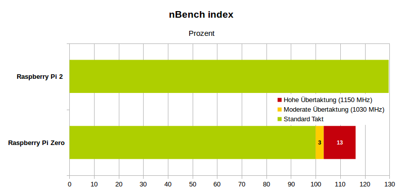

Der Raspberry Pi Zero läuft mit einem Takt von 1000 MHz. Geht da noch mehr durch übertakten? Die Antwort ist Ja, sogar viel mehr und das ohne, dass das Garantieverlustbit gesetzt wird.
Grundsätzliches
Zur Übertaktung der CPU sind zunächst zwei Parameter in der Konfigurationsdatei wichtig “arm_freq” und “over_voltage”. Der erste Parameter setzt direkt die Taktfrequenz der CPU. Der zweite Parameter verändert die CPU-Spannung um 0.025 V pro Wert. Zusätzlich gibt es noch den Wert “force_turbo”. Wird dieser auf 1 gesetzt so wird die CPU-Frequenz nicht geregelt sondern bleibt fix auf den eingestellten Maximalwert. Weiters kann noch die “arm_core” Frequenz erhöht werden, die noch geringen Einfluss auf die Performance hat. Die Frequenz des Arbeitsspeichers kann mit “sdram_freq” gesetzt werden.
Der Raspberry Pi Zero hat den gleichen BCM2835 Prozessor wie der Raspberry Pi 1. Dieser wurde von den ersten Raspberry Pi Varianten bis zum Raspberry Pi B+ mit 700 MHz getaktet. Die CPU-Spannung beträgt in dem Fall 1,2 V. Bei der Raspberry Pi Zero wird der gleiche Prozessor nun mit 1000 MHz getaktet. Dazu musste die CPU-Spannung auf 1,35 V erhöht werden. Hier ist also bereits eine erhöhte CPU-Spannung gesetzt, sodass man diesen nicht mehr viel erhöhen sollte. Diese kann allerdings sowieso nicht über 1,4 V gebracht werden. Auch wenn man “force_turbo” setzt und “over_voltage” auf 4, so bleibt dennoch die CPU-Spannung auf 1,4 V stehen. Hier ist also das maximale Limit erreicht. Interessant ist aber, obwohl die Erhöhung von “over_voltage” über 2 keine Veränderung mehr bringt, bleibt die Regel für das Garantieverlustbit aufrecht.
Originale Beschreibung des “over_voltage” Parameters:
over_voltage CPU/GPU core voltage adjustment. [-16,8] equates to [0.8V,1.4V] with 0.025V steps. In other words, specifying -16 will give 0.8V as the GPU/core voltage, and specifying 8 will give 1.4V. For defaults see table below. Values above 6 are only allowed when force_turbo is specified: this sets the warranty bit if overvoltage is also set.*
Garantieverlustbit (warranty bit)
Achtung wenn man “force_turbo” auf 1 setzt und einen “over_voltage” Wert von mehr als 6 eingibt, wird ein Garantieverlustbit gesetzt. Dieses Bit ist Teil der Revisionsnummer und wird vorne also an achter Stelle gesetzt. Ausgeben kann man es mit “cat /proc/cpuinfo”. Dies konnte mit einem Raspberry Pi Zero v1.3 verifiziert werden.
processor : 0
model name : ARMv6-compatible processor rev 7 (v6l)
BogoMIPS : 1046.93
Features : half thumb fastmult vfp edsp java tls
CPU implementer : 0x41
CPU architecture: 7
CPU variant : 0x0
CPU part : 0xb76
CPU revision : 7
Hardware : BCM2835
Revision : 900093
Serial : 0000000001f700fd
Model : Raspberry Pi Zero Rev 1.3
Nach setzen von “force_turbo” und over_voltage von 8 sieht die Ausgabe so aus:
processor : 0
model name : ARMv6-compatible processor rev 7 (v6l)
BogoMIPS : 1024.81
Features : half thumb fastmult vfp edsp java tls
CPU implementer : 0x41
CPU architecture: 7
CPU variant : 0x0
CPU part : 0xb76
CPU revision : 7
Hardware : BCM2835
Revision : 1900093
Serial : 0000000001f700fd
Model : Raspberry Pi Zero Rev 1.3
Die Revisionsnummer hat sich also von “900093” auf “1900093” geändert. Das Programm “gpio” meldet diesen Zustand nun auch mit dem Zusatz “[Out of Warranty]“. Beim Raspberry Pi Zero W 1.1 wurde das Garantieverlustbit auch gesetzt obwohl nur 2 für “over_voltage” gesetzt war. Es scheint als ob hier andere Regeln gelten. Die Revisionsnummer hat sich also von “9000c1” auf “19000c1 geändert. Ich rate deshalb davon ab “force_turbo” überhaupt zu setzen. Für die Spannungserhöhung wird diese Optional jedenfalls nicht mehr benötigt und ist damit obsolet.
Übertakten
Es wurden Performancewerte und Stabilität bei verschiedenen Übertaktungsstufen getestet. Langsam wurde versucht sich an die maximale stabile Taktrate anzunähern. Als Benchmark wurde nbench verwendet, der bei zu hohen Taktfrequenzen mit Programmabsturz reagiert. Der Benchmark wurde also zur Leistungsmessung und Stabilitätsbewertung verwendet.
Es wurden 3 Taktfrequenzen überprüft. Einmal ohne Übertaktung dann eine erhöhte Taktfrequenz ohne Spannungserhöhung und einmal mit maximalen Takt bei 1,4 V CPU-Spannung.
Bei Raspberry Pi Zero V1.3 konnte bis ca. 1176 MHz getaktet werden (verifiziert mit 2 Einplatinencomputer). Mit der Raspberry Pi Zero W V1.1 wurden bei einen stabilen Betrieb maximal 1150 MHz erreicht. Durch Streuung bei der Produktion der Prozessoren sind diese nicht immer gleich gut zum Übertakten geeignet. Es kann daher nicht sicher gesagt werden welcher Wert nun ein allgemein gültiger Maximalwert ist. Jede CPU hat ihre eigenen Limits. Man kann aber sagen, dass der typisch im Internet genannte Wert von 1100 MHz eher ein niedriger Wert darstellt, der wohl von der Masse der aktuellen Prozessoren unterstützt wird. Ich gehe aber davon aus das, 1150 MHz als oberes Limit möglich ist.
Für die Benchmark Messung wurde die WLAN Funktion des Raspberry Pi W V1.1 ausgeschaltet, da sonst um ca. 5 % niedrigere Werte ermittelt wurden.
Stromaufnahme Leerlauf
Die Messergebnisse offenbaren einen Stromverbrauch im Idle-Betrieb von nur 90 mA, bei dem Raspberry Zero V1.3. Dies gilt auch im übertaktetem Zustand weil im Leerlauf immer nur 1,35 V CPU-Spannung anliegen.
Anders sieht es aus wenn “force_turbo=1” in der Konfigurationsdatei gesetzt ist. Dann taktet die CPU immer mit dem maximalen bzw. konfigurierten Prozessortakt. Dann steigt der Stromverbrauch im Leerlauf auf ca. 110 mA.
Kühlung
Immer wieder sieht man, dass Kühlkörper auf die Raspberry Pi Zero geklebt werden. Der verwendetet Prozessor wir aber im Vergleich zu den leistungsfähigeren Raspberry Pi Version, kaum heiß. Die Stromaufnahme ist selbst im übertakteten Zustand sehr gering. Ich sehe keinen Grund warum man einen Kühlkörper zur Verbesserung der Kühlung verwenden sollte. Auch mit hohen Taktfrequenzen ist man weit von den kritischen 85 °C entfernt. Im Test konnte bei 21 °C Raumtemperatur, nie mehr als 46 °C CPU-Temperatur erreicht werden.
Standard Takt
Config: v0.5.3, args "", priority lowest (+19)
Board: 1 x ARMv6 core available, ondemand governor (Pi0 rev 1.3, BCM2835 SoC with 512MB RAM by Sony UK)
Memory: 512MB (split 464MB ARM, 48MB GPU) plus 148MB Swap
HW Block: | ARM | Core | H264 | SDRAM |
Min Freq: | 700MHz | 250MHz | 0MHz | 450MHz |
Max Freq: | 1000MHz | 250MHz | 300MHz | 450MHz |
Voltages: | 0, 1.3500V | +1, 1.2250V |
Other: temp_limit=85, disable_auto_turbo=1
Firmware: Sep 24 2019 17:37:19, version 6820edeee4ef3891b95fc01cf02a7abd7ca52f17 (clean) (release) (start)
MEMORY INDEX : 3,590
INTEGER INDEX : 5,054
FLOATING-POINT INDEX: 3,385
nbench Durchschnitt: 4,01
Stromaufnahme: 170-180 mA
Moderate Übertaktung
Bei einer moderaten Übertaktung von ca. 3 % muss die Spannung der CPU nicht verändert werden. Folgende Werte wurden in die Konfigurationsdatei “config.txt” eingetragen:
[pi0]
# Overclock Pi Zero (W)
arm_freq=1030
core_freq=500
sdram_freq=500
[all]
Board: 1 x ARMv6 core available, ondemand governor (Pi0 rev 1.3, BCM2835 SoC with 512MB RAM by Sony UK)
Memory: 512MB (split 464MB ARM, 48MB GPU) plus 148MB Swap
HW Block: | ARM | Core | H264 | SDRAM |
Min Freq: | 1030MHz | 500MHz | 0MHz | 500MHz |
Max Freq: | 1030MHz | 500MHz | 300MHz | 500MHz |
Voltages: | 0, 1.3500V | +1, 1.2250V |
Other: temp_limit=85, disable_auto_turbo=1
Firmware: Sep 24 2019 17:37:19, version 6820edeee4ef3891b95fc01cf02a7abd7ca52f17 (clean) (release) (start)
MEMORY INDEX : 3,788
INTEGER INDEX : 5,220
FLOATING-POINT INDEX: 3,418
nbench Durchschnitt: 4,142
Verbesserung: 3,3 %
Stromaufnahme: 180-190 mA
Hohe Übertaktung (1150 MHz)
Bei einer hohen Übertaktung von ca. 15 % muss die Spannung der CPU auf 1,4 V erhöht werden. Folgende Werte wurden in die Konfigurationsdatei “config.txt” eingetragen:
[pi0]
# Overclock Pi Zero (W)
arm_freq=1150
over_voltage=2
core_freq=500
sdram_freq=500
[all]
Board: 1 x ARMv6 core available, ondemand governor (Pi0 rev 1.3, BCM2835 SoC with 512MB RAM by Sony UK)
Memory: 512MB (split 464MB ARM, 48MB GPU) plus 148MB Swap
HW Block: | ARM | Core | H264 | SDRAM |
Min Freq: | 1170MHz | 500MHz | 0MHz | 500MHz |
Max Freq: | 1170MHz | 500MHz | 300MHz | 500MHz |
Voltages: | +2, 1.4000V | +1, 1.2250V |
Other: temp_limit=85, disable_auto_turbo=1
Firmware: Sep 24 2019 17:37:19, version 6820edeee4ef3891b95fc01cf02a7abd7ca52f17 (clean) (release) (start)
MEMORY INDEX : 4.203
INTEGER INDEX : 5.831
FLOATING-POINT INDEX: 3.951
nbench Durchschnitt: 4,662
Verbesserung: 16,3 %
Stromaufnahme: 180-210 mA
Zusammenfassung
Durch eine hohe Übertaktung von 150 MHz kann man rund 16% Mehrleistung aus dem Raspberry Pi Zero herausholen. Damit verringert sich der Abstand zu Raspberry Pi 2 (Basistakt) von ca. 30 % auf 14 %.
Natürlich steigt der Stromverbrauch dann auch an, aber im Grunde nur geringfügig. Der Verbrauch im Leerlauf bleibt aber gleich. Zumindest die Erhöhung um 30 MHz bringt etwas Mehrleitung ohne die CPU-Spannung erhöhen zu müssen.
